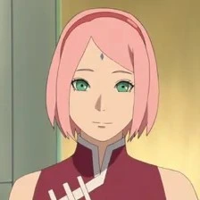
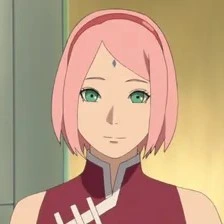

Animé terminé, 2 saisons
Nekketsu, Action
Il y a de cela douze ans, Kyūbi, un démon ayant la forme d'un renard à neuf queues, entreprit la destruction du village de Konoha, mais le quatrième Hokage neutralisa ce démon en le scellant dans le corps d'un nouveau-né : Naruto Uzumaki. Le quatrième Hokage se sacrifia ainsi pour sauver le village de Konoha. L'histoire commence pendant l'adolescence de Naruto, vers ses douze ans. Orphelin, éternel cancre et grand farceur, il fait toutes les bêtises possibles pour se faire remarquer. Son rêve : devenir Hokage afin d'être reconnu par les habitants de son village. En effet, le démon scellé en lui a attisé la crainte et le mépris des autres villageois, qui, avec le temps, ne font plus de différence entre le Kyūbi et Naruto. Malgré cela, Naruto s'entraîne dur afin de devenir genin, le premier niveau chez les ninjas.
 

 Netflix
Netflix
Twix
> Un animé all time, à deux doigts de prendre le trône.
youns13
> Le gros point fort de Naruto c’est les émotions qu’on peut ressentir à travers l’œuvre,
les personnages sont tellement tellement approfondis que c’est impossible de rester indifférent,
c’est aussi un manga où on peut vite s’identifier au personnage. L’histoire est maitrisé,
les thématiques abordées sont fortes et les combats c’est un régal. Pour moi c’est le nekketsu
le plus approfondi après faudra attendre la fin de One Piece
Xano
> Un très bon animé qui a beaucoup marqué mon enfance.
Plus jeune, j'ai adoré suivre l'histoire de Naruto et de ses camarades.